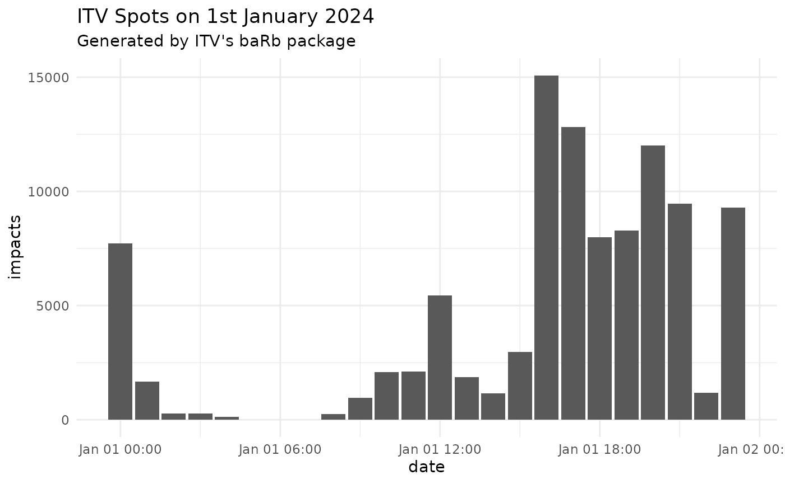

daily-impacts-chart
daily-impacts-chart.Rmd
library(baRb)
library(ggplot2)
#> Error in get(paste0(generic, ".", class), envir = get_method_env()) :
#> object 'type_sum.accel' not found
# Demo data loaded from package to avoid needing credentials
# spots <- barb_get_spots('2024-01-01',
# '2024-01-01',
# advertiser_name = 'ITV',
# async = FALSE)
spots <- spots_demo
head(spots)
#> # A tibble: 6 × 74
#> document_id panel_region is_macro_region station_name sales_house_name
#> <int> <chr> <lgl> <chr> <chr>
#> 1 6 Wales FALSE ITV1+1 ITV SALES
#> 2 8 North West FALSE ITV1 HD ITV SALES
#> 3 19 Border FALSE ITV1+1 ITV SALES
#> 4 30 North East FALSE ITV1+1 ITV SALES
#> 5 39 North East FALSE ITV1 ITV SALES
#> 6 54 North West FALSE ITV1+1 ITV SALES
#> # ℹ 69 more variables: clearcast_commercial_title <chr>,
#> # preceding_programme_name <chr>, spot_duration <int>, break_type <chr>,
#> # commercial_number <chr>, advertiser_name <chr>, product_name <chr>,
#> # clearcast_web_address <chr>, standard_datetime <chr>, all_homes <dbl>,
#> # all_adults <dbl>, all_men <dbl>, all_houseperson <dbl>,
#> # all_children_aged_4_15 <dbl>, adults_16_24 <dbl>, adults_16_34 <dbl>,
#> # adults_35_44 <dbl>, adults_45_54 <dbl>, adults_55_64 <dbl>, …
spots_summary <- barb_rollup_spots(spots, granularity = "hour")
head(spots_summary)
#> # A tibble: 6 × 11
#> parent_station_name sales_house_name clearcast_commercial_title
#> <chr> <chr> <chr>
#> 1 ITV1 ITV SALES BRISTOL
#> 2 ITV1 ITV SALES GENERIC
#> 3 ITV1 ITV SALES GENERIC
#> 4 ITV1 ITV SALES GENERIC
#> 5 ITV1 ITV SALES GENERIC
#> 6 ITV1 ITV SALES GENERIC
#> # ℹ 8 more variables: preceding_programme_name <chr>, spot_duration <dbl>,
#> # commercial_number <chr>, advertiser_name <chr>, product_name <chr>,
#> # clearcast_web_address <chr>, date <dttm>, impacts <dbl>
spots_summary |>
ggplot(aes(x = date, y = impacts)) +
geom_col() +
labs(title = "ITV Spots on 1st January 2024", subtitle = "Generated by ITV's baRb package") +
theme_minimal()